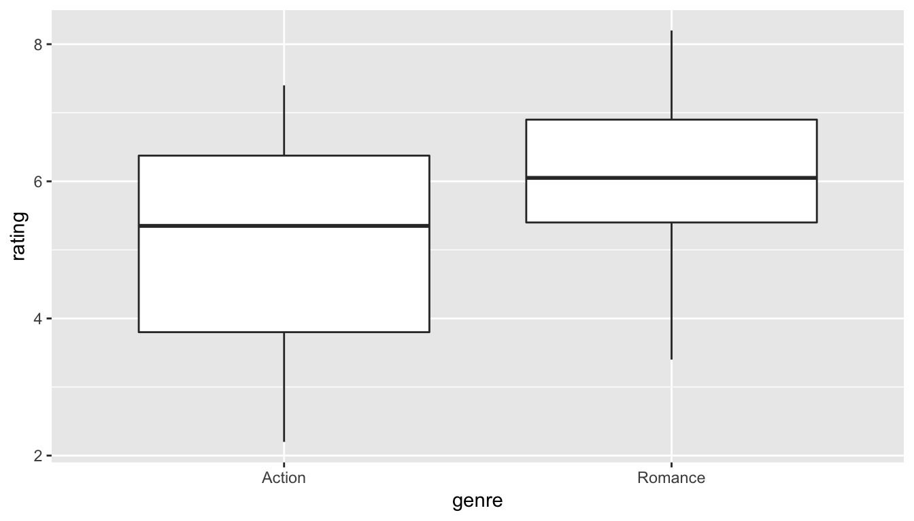

10 Hypothesis Testing
Note: This chapter is still under construction. If you would like to contribute, please check us out on GitHub at https://github.com/moderndive/moderndive_book.
Please check out our sneak peak of infer below in the meanwhile. For more details on infer visit https://infer.netlify.com/.

10.1 Sneak peak of infer

- Question: Of all the cars in the
mtcarsdataset, do automatic cars get better gas mileage than manual cars? - Approach: Two-sample test for difference in means.
library(dplyr)
library(ggplot2)
library(infer)
# Clean data
mtcars <- mtcars %>%
as_tibble() %>%
mutate(am = factor(am))
# Observed test statistic
obs_stat <- mtcars %>%
group_by(am) %>%
summarize(mean = mean(mpg)) %>%
summarize(obs_stat = diff(mean)) %>%
pull(obs_stat)
# Simulate null distribution of two-sample difference in means:
null_distribution <- mtcars %>%
specify(mpg ~ am) %>%
hypothesize(null = "independence") %>%
generate(reps = 1000, type = "permute") %>%
calculate(stat = "diff in means", order = c("1", "0"))
# Visualize:
plot <- null_distribution %>%
visualize()
plot +
geom_vline(xintercept = obs_stat, col = "red", size = 1)10.2 Under construction…
The content here will be deprecated with a shift to using the infer package in the months to come.
We saw some of the main concepts of hypothesis testing introduced in Chapter 8. We will expand further on these ideas here and also provide a framework for understanding hypothesis tests in general. Instead of presenting you with lots of different formulas and scenarios, we hope to build a way to think about all hypothesis tests. You can then adapt to different scenarios as needed down the road when you encounter different statistical situations.
The same can be said for confidence intervals. There is one general framework that applies to all confidence intervals and we will elaborate on this further in Chapter 9. The specifics may change slightly for each variation, but the important idea is to understand the general framework so that you can apply it to more specific problems. We believe that this approach is much better in the long-term than teaching you specific tests and confidence intervals rigorously. You can find fully-worked out examples for five common hypothesis tests and their corresponding confidence intervals in Appendix B.
We recommend that you carefully review these examples as they also cover how the general frameworks apply to traditional normal-based methodologies like the \(t\)-test and normal-theory confidence intervals. You’ll see there that these methods are just approximations for the general computational frameworks, but require conditions to be met for their results to be valid. The general frameworks using randomization, simulation, and bootstrapping do not hold the same sorts of restrictions and further advance computational thinking, which is one big reason for their emphasis throughout this textbook.
Needed packages
Let’s load all the packages needed for this chapter (this assumes you’ve already installed them). If needed, read Section 2.3 for information on how to install and load R packages.
library(dplyr)
library(ggplot2)
library(mosaic)
library(knitr)
library(nycflights13)
library(ggplot2movies)
library(broom)10.3 When inference is not needed
Before we delve into the two techniques of inference (hypothesis testing and confidence intervals), it’s good to remember that there are cases where you need not perform a rigorous statistical inference. An important and time-saving skill is to ALWAYS do exploratory data analysis using dplyr and ggplot2 before thinking about running a hypothesis test. Let’s look at such an example selecting a sample of flights traveling to Boston and to San Francisco from New York City in the flights data frame in the nycflights13 package. (We will remove flights with missing data first using na.omit and then sample 100 flights going to each of the two airports.)
bos_sfo <- flights %>%
na.omit() %>%
filter(dest %in% c("BOS", "SFO")) %>%
group_by(dest) %>%
sample_n(100)Suppose we were interested in seeing if the air_time to SFO in San Francisco was statistically greater than the air_time to BOS in Boston. As suggested, let’s begin with some exploratory data analysis to get a sense for how the two variables of air_time and dest relate for these two destination airports:
bos_sfo_summary <- bos_sfo %>% group_by(dest) %>%
summarize(mean_time = mean(air_time),
sd_time = sd(air_time))
kable(bos_sfo_summary)| dest | mean_time | sd_time |
|---|---|---|
| BOS | 38.7 | 3.91 |
| SFO | 346.2 | 16.71 |
Looking at these results, we can clearly see that SFO air_time is much larger than BOS air_time. The standard deviation is also extremely informative here.
Learning check
(LC10.1) Could we make the same type of immediate conclusion that SFO had a statistically greater air_time if, say, its corresponding standard deviation was 200 minutes? What about 100 minutes? Explain.
To further understand just how different the air_time variable is for BOS and SFO, let’s look at a boxplot:
ggplot(data = bos_sfo, mapping = aes(x = dest, y = air_time)) +
geom_boxplot()
Since there is no overlap at all, we can conclude that the air_time for San Francisco flights is statistically greater (at any level of significance) than the air_time for Boston flights. This is a clear example of not needing to do anything more than some simple descriptive statistics to get an appropriate inferential conclusion. This is one reason why you should ALWAYS investigate the sample data first using dplyr and ggplot2 via exploratory data analysis.
As you get more and more practice with hypothesis testing, you’ll be better able to determine in many cases whether or not the results will be statistically significant. There are circumstances where it is difficult to tell, but you should always try to make a guess FIRST about significance after you have completed your data exploration and before you actually begin the inferential techniques.
10.4 Basics of hypothesis testing
In a hypothesis test, we will use data from a sample to help us decide between two competing hypotheses about a population. We make these hypotheses more concrete by specifying them in terms of at least one population parameter of interest. We refer to the competing claims about the population as the null hypothesis, denoted by \(H_0\), and the alternative (or research) hypothesis, denoted by \(H_a\). The roles of these two hypotheses are NOT interchangeable.
- The claim for which we seek significant evidence is assigned to the alternative hypothesis. The alternative is usually what the experimenter or researcher wants to establish or find evidence for.
- Usually, the null hypothesis is a claim that there really is “no effect” or “no difference.” In many cases, the null hypothesis represents the status quo or that nothing interesting is happening.
- We assess the strength of evidence by assuming the null hypothesis is true and determining how unlikely it would be to see sample results/statistics as extreme (or more extreme) as those in the original sample.
Hypothesis testing brings about many weird and incorrect notions in the scientific community and society at large. One reason for this is that statistics has traditionally been thought of as this magic box of algorithms and procedures to get to results and this has been readily apparent if you do a Google search of “flowchart statistics hypothesis tests”. There are so many different complex ways to determine which test is appropriate.
You’ll see that we don’t need to rely on these complicated series of assumptions and procedures to conduct a hypothesis test any longer. These methods were introduced in a time when computers weren’t powerful. Your cellphone (in 2016) has more power than the computers that sent NASA astronauts to the moon after all. We’ll see that ALL hypothesis tests can be broken down into the following framework given by Allen Downey here:

Figure 10.1: Hypothesis Testing Framework
Before we hop into this framework, we will provide another way to think about hypothesis testing that may be useful.
10.5 Criminal trial analogy
We can think of hypothesis testing in the same context as a criminal trial in the United States. A criminal trial in the United States is a familiar situation in which a choice between two contradictory claims must be made.
The accuser of the crime must be judged either guilty or not guilty.
Under the U.S. system of justice, the individual on trial is initially presumed not guilty.
Only STRONG EVIDENCE to the contrary causes the not guilty claim to be rejected in favor of a guilty verdict.
The phrase “beyond a reasonable doubt” is often used to set the cutoff value for when enough evidence has been given to convict.
Theoretically, we should never say “The person is innocent.” but instead “There is not sufficient evidence to show that the person is guilty.”
Now let’s compare that to how we look at a hypothesis test.
The decision about the population parameter(s) must be judged to follow one of two hypotheses.
We initially assume that \(H_0\) is true.
The null hypothesis \(H_0\) will be rejected (in favor of \(H_a\)) only if the sample evidence strongly suggests that \(H_0\) is false. If the sample does not provide such evidence, \(H_0\) will not be rejected.
The analogy to “beyond a reasonable doubt” in hypothesis testing is what is known as the significance level. This will be set before conducting the hypothesis test and is denoted as \(\alpha\). Common values for \(\alpha\) are 0.1, 0.01, and 0.05.
10.5.1 Two possible conclusions
Therefore, we have two possible conclusions with hypothesis testing:
- Reject \(H_0\)
- Fail to reject \(H_0\)
Gut instinct says that “Fail to reject \(H_0\)” should say “Accept \(H_0\)” but this technically is not correct. Accepting \(H_0\) is the same as saying that a person is innocent. We cannot show that a person is innocent; we can only say that there was not enough substantial evidence to find the person guilty.
When you run a hypothesis test, you are the jury of the trial. You decide whether there is enough evidence to convince yourself that \(H_a\) is true (“the person is guilty”) or that there was not enough evidence to convince yourself \(H_a\) is true (“the person is not guilty”). You must convince yourself (using statistical arguments) which hypothesis is the correct one given the sample information.
Important note: Therefore, DO NOT WRITE “Accept \(H_0\)” any time you conduct a hypothesis test. Instead write “Fail to reject \(H_0\).”
10.6 Types of errors in hypothesis testing
Unfortunately, just as a jury or a judge can make an incorrect decision in regards to a criminal trial by reaching the wrong verdict, there is some chance we will reach the wrong conclusion via a hypothesis test about a population parameter. As with criminal trials, this comes from the fact that we don’t have complete information, but rather a sample from which to try to infer about a population.
The possible erroneous conclusions in a criminal trial are
- an innocent person is convicted (found guilty) or
- a guilty person is set free (found not guilty).
The possible errors in a hypothesis test are
- rejecting \(H_0\) when in fact \(H_0\) is true (Type I Error) or
- failing to reject \(H_0\) when in fact \(H_0\) is false (Type II Error).
The risk of error is the price researchers pay for basing an inference about a population on a sample. With any reasonable sample-based procedure, there is some chance that a Type I error will be made and some chance that a Type II error will occur.
To help understand the concepts of Type I error and Type II error, observe the following table:

Figure 10.2: Type I and Type II errors
If we are using sample data to make inferences about a parameter, we run the risk of making a mistake. Obviously, we want to minimize our chance of error; we want a small probability of drawing an incorrect conclusion.
- The probability of a Type I Error occurring is denoted by \(\alpha\) and is called the significance level of a hypothesis test
- The probability of a Type II Error is denoted by \(\beta\).
Formally, we can define \(\alpha\) and \(\beta\) in regards to the table above, but for hypothesis tests instead of a criminal trial.
- \(\alpha\) corresponds to the probability of rejecting \(H_0\) when, in fact, \(H_0\) is true.
- \(\beta\) corresponds to the probability of failing to reject \(H_0\) when, in fact, \(H_0\) is false.
Ideally, we want \(\alpha = 0\) and \(\beta = 0\), meaning that the chance of making an error does not exist. When we have to use incomplete information (sample data), it is not possible to have both \(\alpha = 0\) and \(\beta = 0\). We will always have the possibility of at least one error existing when we use sample data.
Usually, what is done is that \(\alpha\) is set before the hypothesis test is conducted and then the evidence is judged against that significance level. Common values for \(\alpha\) are 0.05, 0.01, and 0.10. If \(\alpha = 0.05\), we are using a testing procedure that, used over and over with different samples, rejects a TRUE null hypothesis five percent of the time.
So if we can set \(\alpha\) to be whatever we want, why choose 0.05 instead of 0.01 or even better 0.0000000000000001? Well, a small \(\alpha\) means the test procedure requires the evidence against \(H_0\) to be very strong before we can reject \(H_0\). This means we will almost never reject \(H_0\) if \(\alpha\) is very small. If we almost never reject \(H_0\), the probability of a Type II Error – failing to reject \(H_0\) when we should – will increase! Thus, as \(\alpha\) decreases, \(\beta\) increases and as \(\alpha\) increases, \(\beta\) decreases. We, therefore, need to strike a balance in \(\alpha\) and \(\beta\) and the common values for \(\alpha\) of 0.05, 0.01, and 0.10 usually lead to a nice balance.
Learning check
(LC10.2) Reproduce the table above about errors, but for a hypothesis test, instead of the one provided for a criminal trial.
10.6.1 Logic of hypothesis testing
- Take a random sample (or samples) from a population (or multiple populations)
- If the sample data are consistent with the null hypothesis, do not reject the null hypothesis.
- If the sample data are inconsistent with the null hypothesis (in the direction of the alternative hypothesis), reject the null hypothesis and conclude that there is evidence the alternative hypothesis is true (based on the particular sample collected).
10.7 Statistical significance
The idea that sample results are more extreme than we would reasonably expect to see by random chance if the null hypothesis were true is the fundamental idea behind statistical hypothesis tests. If data at least as extreme would be very unlikely if the null hypothesis were true, we say the data are statistically significant. Statistically significant data provide convincing evidence against the null hypothesis in favor of the alternative, and allow us to generalize our sample results to the claim about the population.
Learning check
(LC10.3) What is wrong about saying “The defendant is innocent.” based on the US system of criminal trials?
(LC10.4) What is the purpose of hypothesis testing?
(LC10.5) What are some flaws with hypothesis testing? How could we alleviate them?
10.8 Example: Revisiting the Lady Tasting Tea
Recall the “There is Only One Test” diagram from earlier:
Figure 10.3: Hypothesis Testing Framework
We will now walk through how each of the steps to the diagram apply to determining whether the lady tasting tea was actually better than chance at determining whether or not milk was added first. We will see that the process of creating a null distribution is a statistical way to quantifying surprise.
10.8.1 Data
Let’s assume as we did in Chapter 8 that the lady is correct in determining whether milk was added first or not in 9 out of 10 trials. Our data, therefore, may look something like
| x |
|---|
| Correct |
| Correct |
| Correct |
| Incorrect |
| Correct |
| Correct |
| Correct |
| Correct |
| Correct |
| Correct |
10.8.2 Test statistic \(\delta\)
We are interested in the number of Correct out of our 10 trials. We can denote this number of successes using the symbol \(t\), where \(t\) corresponds to total. This is our test statistic \(\delta\) in this case.
10.8.3 Observed effect \(\delta^*\)
The actual observed value of the test statistic from our observed sample is \(\hat{t}_{obs} = 9\). Thus, \(\delta^* = 9\).
10.8.4 Model of \(H_0\)
Our null hypothesis is that the lady is only as good as chance at guessing correctly. Hypotheses always correspond to parameters and are denoted with Greek letters. Thus, symbolically, we have \(H_0: \tau = 5\). Since we are assuming chance and we have 10 flips with 0.5 probability of success of each flip, we have \(\tau = 10 \times 0.5 = 5\).
10.8.5 Simulated data
We now want to use this null hypothesis to simulate the test statistic assuming that the null hypothesis is true. Therefore, we want to figure out a way to simulate 10 trials, getting either the choice Correct or Incorrect, assuming that the probability of success (getting it Correct) in any given trial is 0.5.
Tactile simulation
When you are presented with a hypothesis testing problem, frequently the most challenging portion is setting up how to simulate the data assuming the null hypothesis is true. To facilitate with this, setting up a tactile, hands on experiment can help.
In this case, flipping a fair coin is a great way to simulate this process. This simulates how the sample could be collected assuming the null hypothesis is true. To simulate 10 trials, we could flip the fair coin and record Heads as Correct and Tails as Incorrect.
Some simulated data using this coin flipping procedure may look like the following. Note that this data frame is not tidy, but is a convenient way to look at the results of the simulation in this wide format. The numbers on the far left correspond to the number of the trial.
| sample1 | sample2 | sample3 | |
|---|---|---|---|
| 1 | Correct | Correct | Correct |
| 2 | Correct | Incorrect | Incorrect |
| 3 | Incorrect | Incorrect | Correct |
| 4 | Incorrect | Incorrect | Correct |
| 5 | Correct | Incorrect | Incorrect |
| 6 | Correct | Incorrect | Correct |
| 7 | Incorrect | Incorrect | Correct |
| 8 | Incorrect | Correct | Incorrect |
| 9 | Incorrect | Correct | Incorrect |
| 10 | Incorrect | Correct | Incorrect |
We then use the formula for the Test Statistic to determine the simulated test statistic for each of these simulated samples. So in this case we have
\(t_1 = 4\), \(t_2 = 4\), \(t_3 = 5\)
10.8.6 Distribution of \(\delta\) under \(H_0\)
We could continue this process, say, 5000 times by flipping a coin in sets of 10 for 5000 repetitions and counting and taking note of how many heads out of 10 we have for each set. It’s at this point that you surely realize that a computer can do this procedure much faster and more efficient than the tactile experiment with a coin.
Recall that we’ve already created the distribution of 5000 such coin flips and we’ve stored these values in the heads variable in the simGuesses data frame:
simGuesses <- do(5000) * rflip(10)
ggplot(data = simGuesses, aes(x = factor(heads))) +
geom_bar()
10.8.7 The p-value
Definition: \(p\)-value:
The p-value is the probability of observing a sample statistic as extreme or more extreme than what was observed, assuming that the null hypothesis of a by chance operation is true.
This definition may be a little intimidating the first time you read it, but it’s important to come back to this “The Lady Tasting Tea” problem whenever you encounter \(p\)-values as you begin to learn about the concept. Here the \(p\)-value corresponds to how many times in our null distribution of heads 9 or more heads occurred.
We can use another neat feature of R to calculate the \(p\)-value for this problem. Note that “more extreme” in this case corresponds to looking at values of 9 or greater since our alternative hypothesis invokes a right-tail test corresponding to a “greater than” hypothesis of \(H_a: \tau > 5\). In other words, we are looking to see how likely it is for the lady to pick 9 or more correct instead of 9 or less correct. We’d like to go in the right direction.
pvalue_tea <- simGuesses %>%
filter(heads >= 9) %>%
nrow() / nrow(simGuesses)Let’s walk through each step of this calculation:
First,
pvalue_teawill be the name of our calculated \(p\)-value and the assignment operator<-directs us to this naming.- We are working with the
simGuessesdata frame here so that comes immediately before the pipe operator.
We would like to only focus on the rows in our
simGuessesdata frame that haveheadsvalues of 9 or 10. This represents simulated statistics “as extreme or more extreme” than what we observed (9 correct guesses out of 10). To get a glimpse of what we have up to this point, runsimGuesses %>% filter(heads >= 9) %>% View().Now that we have changed the focus to only those rows that have number of heads out of 10 flips corresponding to 9 or more, we count how many of those there are. The function
nrowgives how many entries are in this filtered data frame and lastly we calculate the proportion that are at least as extreme as our observed value of 9 by dividing by the number of total simulations (5,000).
We can see that the observed statistic of 9 correct guesses is not a likely outcome assuming the null hypothesis is true. Only around 1% of the outcomes in our 5000 simulations fall at or above 9 successes. We have evidence supporting the conclusion that the person is actually better than just guessing at random at determining whether milk has been added first or not. To better visualize this we can also make use of blue shading on the histogram corresponding to the \(p\)-value:
ggplot(data = simGuesses, aes(x = factor(heads), fill = (heads >= 9))) +
geom_bar() +
labs(x = "heads")
Figure 10.4: Barplot of heads with p-value highlighted
This helps us better see just how few of the values of heads are at our observed value or more extreme. This idea of a \(p\)-value can be extended to the more traditional methods using normal and \(t\) distributions in the traditional way that introductory statistics has been presented. These traditional methods were used because statisticians haven’t always been able to do 5000 simulations on the computer within seconds. We’ll elaborate on this more in a few sections.
Learning check
(LC10.6) How could we make Table 10.1 into a tidy data frame?
(LC10.7) What is meant by “pseudo-random number generation?”
(LC10.8) How can simulation be used to help us address the question of whether or not an observed result is statistically significant?
(LC10.9) In Chapter 3, we noted that barplots should be used when creating a plot of categorical variables. Why are we using barplots to make a plot of a numerical variable heads in this chapter?
10.9 Example: Comparing two means
10.9.1 Randomization/permutation
We will now focus on building hypotheses looking at the difference between two population means in an example. We will denote population means using the Greek symbol \(\mu\) (pronounced “mu”). Thus, we will be looking to see if one group “out-performs” another group. This is quite possibly the most common type of statistical inference and serves as a basis for many other types of analyses when comparing the relationship between two variables.
Our null hypothesis will be of the form \(H_0: \mu_1 = \mu_2\), which can also be written as \(H_0: \mu_1 - \mu_2 = 0\). Our alternative hypothesis will be of the form \(H_0: \mu_1 \star \mu_2\) (or \(H_a: \mu_1 - \mu_2 \, \star \, 0\)) where \(\star\) = \(<\), \(\ne\), or \(>\) depending on the context of the problem. You needn’t focus on these new symbols too much at this point. It will just be a shortcut way for us to describe our hypotheses.
As we saw earlier, simulation is a valuable tool when conducting inferences based on one population variable. We will see that the process of randomization (also known as permutation) will be valuable in conducting tests comparing quantitative values from two groups.
10.9.2 Comparing action and romance movies
The movies dataset in the ggplot2movies package contains information on a large number of movies that have been rated by users of IMDB.com (Wickham 2015). We are interested in the question here of whether Action movies are rated higher on IMDB than Romance movies. We will first need to do a little bit of data wrangling using the ideas from Chapter 5 to get the data in the form that we would like:
(movies_trimmed <- movies %>% select(title, year, rating, Action, Romance))Note that Action and Romance are binary variables here. To remove any overlap of movies (and potential confusion) that are both Action and Romance, we will remove them from our population:
movies_trimmed <- movies_trimmed %>%
filter(!(Action == 1 & Romance == 1))We will now create a new variable called genre that specifies whether a movie in our movies_trimmed data frame is an "Action" movie, a "Romance" movie, or "Neither". We aren’t really interested in the "Neither" category here so we will exclude those rows as well. Lastly, the Action and Romance columns are not needed anymore since they are encoded in the genre column.
movies_trimmed <- movies_trimmed %>%
mutate(genre = ifelse(Action == 1, "Action",
ifelse(Romance == 1, "Romance",
"Neither"))) %>%
filter(genre != "Neither") %>%
select(-Action, -Romance)We are left with 8878 movies in our population dataset that focuses on only "Action" and "Romance" movies.
Learning check
(LC10.10) Why are the different genre variables stored as binary variables (1s and 0s) instead of just listing the genre as a column of values like “Action”, “Comedy”, etc.?
(LC10.11) What complications could come above with us excluding action romance movies? Should we question the results of our hypothesis test? Explain.
Let’s now visualize the distributions of rating across both levels of genre. Think about what type(s) of plot is/are appropriate here before you proceed:
ggplot(data = movies_trimmed, aes(x = genre, y = rating)) +
geom_boxplot()
Figure 10.5: Rating vs genre in the population
We can see that the middle 50% of ratings for "Action" movies is more spread out than that of "Romance" movies in the population. "Romance" has outliers at both the top and bottoms of the scale though. We are initially interested in comparing the mean rating across these two groups so a faceted histogram may also be useful:
ggplot(data = movies_trimmed, mapping = aes(x = rating)) +
geom_histogram(binwidth = 1, color = "white", fill = "dodgerblue") +
facet_grid(genre ~ .)
Figure 10.6: Faceted histogram of genre vs rating
Important note: Remember that we hardly ever have access to the population values as we do here. This example and the nycflights13 dataset were used to create a common flow from chapter to chapter. In nearly all circumstances, we’ll be needing to use only a sample of the population to try to infer conclusions about the unknown population parameter values. These examples do show a nice relationship between statistics (where data is usually small and more focused on experimental settings) and data science (where data is frequently large and collected without experimental conditions).
10.9.3 Sampling \(\rightarrow\) randomization
We can use hypothesis testing to investigate ways to determine, for example, whether a treatment has an effect over a control and other ways to statistically analyze if one group performs better than, worse than, or different than another. We will also use confidence intervals to determine the size of the effect, if it exists. You’ll see more on this in Chapter 9.
We are interested here in seeing how we can use a random sample of action movies and a random sample of romance movies from movies to determine if a statistical difference exists in the mean ratings of each group.
Learning check
(LC10.12) Define the relevant parameters here in terms of the populations of movies.
10.9.4 Data
Let’s select a random sample of 34 action movies and a random sample of 34 romance movies. (The number 34 was chosen somewhat arbitrarily here.)
set.seed(2017)
movies_genre_sample <- movies_trimmed %>%
group_by(genre) %>%
sample_n(34) %>%
ungroup()Note the addition of the ungroup() function here. This will be useful shortly in allowing us to shuffle the values of rating across genre. Our analysis does not work without this ungroup() function since the data stays grouped by the levels of genre without it.
We can now observe the distributions of our two sample ratings for both groups. Remember that these plots should be rough approximations of our population distributions of movie ratings for "Action" and "Romance" in our population of all movies in the movies data frame.
ggplot(data = movies_genre_sample, aes(x = genre, y = rating)) +
geom_boxplot()
Figure 10.7: Genre vs rating for our sample
ggplot(data = movies_genre_sample, mapping = aes(x = rating)) +
geom_histogram(binwidth = 1, color = "white", fill = "dodgerblue") +
facet_grid(genre ~ .)
Figure 10.8: Genre vs rating for our sample as faceted histogram
Learning check
(LC10.13) What single value could we change to improve the approximation using the sample distribution on the population distribution?
Do we have reason to believe, based on the sample distributions of rating over the two groups of genre, that there is a significant difference between the mean rating for action movies compared to romance movies? It’s hard to say just based on the plots. The boxplot does show that the median sample rating is higher for romance movies, but the histogram isn’t as clear. The two groups have somewhat differently shaped distributions but they are both over similar values of rating. It’s often useful to calculate the mean and standard deviation as well, conditioned on the two levels.
summary_ratings <- movies_genre_sample %>%
group_by(genre) %>%
summarize(mean = mean(rating),
std_dev = sd(rating),
n = n())
summary_ratings %>% kable()| genre | mean | std_dev | n |
|---|---|---|---|
| Action | 5.11 | 1.49 | 34 |
| Romance | 6.06 | 1.15 | 34 |
Learning check
(LC10.14) Why did we not specify na.rm = TRUE here as we did in Chapter 5?
We see that the sample mean rating for romance movies, \(\bar{x}_{r}\), is greater than the similar measure for action movies, \(\bar{x}_a\). But is it statistically significantly greater (thus, leading us to conclude that the means are statistically different)? The standard deviation can provide some insight here but with these standard deviations being so similar it’s still hard to say for sure.
Learning check
(LC10.15) Why might the standard deviation provide some insight about the means being statistically different or not?
10.9.5 Model of \(H_0\)
The hypotheses we specified can also be written in another form to better give us an idea of what we will be simulating to create our null distribution.
- \(H_0: \mu_r - \mu_a = 0\)
- \(H_a: \mu_r - \mu_a \ne 0\)
10.9.6 Test statistic \(\delta\)
We are, therefore, interested in seeing whether the difference in the sample means, \(\bar{x}_r - \bar{x}_a\), is statistically different than 0. R has a built-in command that can calculate the difference in these two sample means.
10.9.7 Observed effect \(\delta^*\)
mean_ratings <- movies_genre_sample %>%
group_by(genre) %>%
summarize(mean = mean(rating))
obs_diff <- diff(mean_ratings$mean)We see here that the diff function calculates \(\bar{x}_r - \bar{x}_a = 6.062 - 5.112 = 0.95\). We will now proceed similarly to how we conducted the hypothesis test above for the Lady Tasting Tea using simulation. Our goal is figure out a random process with which to simulate the null hypothesis being true. Earlier in this chapter, we used flipping of a fair coin as the random process we were simulating with the null hypothesis being true (\(H_0: \tau = 5\)).
10.9.8 Simulated data
Tactile simulation
Here, with us assuming the two population means are equal (\(H_0: \mu_r - \mu_a = 0\)), we can look at this from a tactile point of view by using index cards. There are \(n_r = 34\) data elements corresponding to romance movies and \(n_a = 34\) for action movies. We can write the 34 ratings from our sample for romance movies on one set of 34 index cards and the 34 ratings for action movies on another set of 34 index cards. (Note that the sample sizes need not be the same.)
The next step is to put the two stacks of index cards together, creating a new set of 68 cards. If we assume that the two population means are equal, we are saying that there is no association between ratings and genre (romance vs action). We can use the index cards to create two new stacks for romance and action movies. First, we must shuffle all the cards thoroughly. After doing so, in this case with equal values of sample sizes, we split the deck in half.
We then calculate the new sample mean rating of the romance deck, and also the new sample mean rating of the action deck. This creates one simulation of the samples that were collected originally. We next want to calculate a statistic from these two samples. Instead of actually doing the calculation using index cards, we can use R as we have before to simulate this process.
shuffled_ratings <- #movies_trimmed %>%
movies_genre_sample %>%
mutate(genre = shuffle(genre)) %>%
group_by(genre) %>%
summarize(mean = mean(rating))
diff(shuffled_ratings$mean)[1] -0.132Learning check
(LC10.16) How would the tactile shuffling of index cards change if we had different samples of say 20 action movies and 60 romance movies? Describe each step that would change.
(LC10.17) Why are we taking the difference in the means of the cards in the new shuffled decks?
10.9.9 Distribution of \(\delta\) under \(H_0\)
The only new command here is shuffle from the mosaic package, which does what we would expect it to do. It simulates a shuffling of the ratings between the two levels of genre just as we could have done with index cards. We can now proceed in a similar way to what we have done previously with the Lady Tasting Tea example by repeating this process many times to create a null distribution of simulated differences in sample means.
set.seed(2017)
many_shuffles <- do(5000) *
(movies_genre_sample %>%
mutate(genre = shuffle(genre)) %>%
group_by(genre) %>%
summarize(mean = mean(rating))
)It is a good idea here to View the many_shuffles data frame via View(many_shuffles). We need to figure out a way to subtract the first value of mean from the second value of mean for each of the 5000 simulations. This is a little tricky but the group_by function comes to our rescue here:
rand_distn <- many_shuffles %>%
group_by(.index) %>%
summarize(diffmean = diff(mean))
head(rand_distn, 10)We can now plot the distribution of these simulated differences in means:
ggplot(data = rand_distn, aes(x = diffmean)) +
geom_histogram(color = "white", bins = 20)Figure 10.9: Simulated differences in means histogram
10.9.10 The p-value
Remember that we are interested in seeing where our observed sample mean difference of 0.95 falls on this null/randomization distribution. We are interested in simply a difference here so “more extreme” corresponds to values in both tails on the distribution. Let’s shade our null distribution to show a visual representation of our \(p\)-value:
ggplot(data = rand_distn, aes(x = diffmean, fill = (abs(diffmean) >= obs_diff))) +
geom_histogram(color = "white", bins = 20)
Figure 10.10: Shaded histogram to show p-value
Remember that the observed difference in means was 0.95. We have shaded green all values at or above that value and also shaded green those values at or below its negative value (since this is a two-tailed test). We can add a vertical line to represent both the observed difference and its negative instead. To better estimate how large the \(p\)-value will be, we also increase the number of bins to 100 here from 20:
ggplot(data = rand_distn, aes(x = diffmean)) +
geom_histogram(color = "white", bins = 100) +
geom_vline(xintercept = obs_diff, color = "red") +
geom_vline(xintercept = -obs_diff, color = "red")
Figure 10.11: Histogram with vertical lines corresponding to observed statistic
At this point, it is important to take a guess as to what the \(p\)-value may be. We can see that there are only a few shuffled differences as extreme or more extreme than our observed effect (in both directions). Maybe we guess that this \(p\)-value is somewhere around 2%, or maybe 3%, but certainly not 30% or more. **You’ll find yourself getting very strange results if you’ve messed up the signs in your calculation of the \(p\)-value so you should always check first that you have a range of reasonable values after looking at the histogram for the \(p\)-value. Lastly, we calculate the \(p\)-value directly using dplyr:
(pvalue_movies <- rand_distn %>%
filter(abs(diffmean) >= obs_diff) %>%
nrow() / nrow(rand_distn))[1] 0.0042We have around 0.42% of values as extreme or more extreme than our observed effect in both directions. Assuming we are using a 5% significance level for \(\alpha\), we have evidence supporting the conclusion that the mean rating for romance movies is different from that of action movies. The next important idea is to better understand just how much higher of a mean rating can we expect the romance movies to have compared to that of action movies. This can be addressed by creating a 95% confidence interval as we will explore in Chapter 9.
Learning check
(LC10.18) Conduct the same analysis comparing action movies versus romantic movies using the median rating instead of the mean rating? Make sure to use the %>% as much as possible. What was different and what was the same?
(LC10.19) What conclusions can you make from viewing the faceted histogram looking at rating versus genre that you couldn’t see when looking at the boxplot?
(LC10.20) Describe in a paragraph how we used Allen Downey’s diagram to conclude if a statistical difference existed between mean movie ratings for action and romance movies.
(LC10.21) Why are we relatively confident that the distributions of the sample ratings will be good approximations of the population distributions of ratings for the two genres?
(LC10.22) Using the definition of “\(p\)-value”, write in words what the \(p\)-value represents for the hypothesis test above comparing the mean rating of romance to action movies.
(LC10.23) What is the value of the \(p\)-value for the hypothesis test comparing the mean rating of romance to action movies?
(LC10.24) Do the results of the hypothesis test match up with the original plots we made looking at the population of movies? Why or why not?
10.9.11 Summary
To review, these are the steps one would take whenever you’d like to do a hypothesis test comparing values from the distributions of two groups:
Simulate many samples using a random process that matches the way the original data were collected and that assumes the null hypothesis is true.
Collect the values of a sample statistic for each sample created using this random process to build a randomization distribution.
Assess the significance of the original sample by determining where its sample statistic lies in the randomization distribution.
If the proportion of values as extreme or more extreme than the observed statistic in the randomization distribution is smaller than the pre-determined significance level \(\alpha\), we reject \(H_0\). Otherwise, we fail to reject \(H_0\). (If no significance level is given, one can assume \(\alpha = 0.05\).)
10.10 Building theory-based methods using computation
As a point of reference, we will now discuss the traditional theory-based way to conduct the hypothesis test for determining if there is a statistically significant difference in the sample mean rating of Action movies versus Romance movies. This method and ones like it work very well when the assumptions are met in order to run the test. They are based on probability models and distributions such as the normal and \(t\)-distributions.
These traditional methods have been used for many decades back to the time when researchers didn’t have access to computers that could run 5000 simulations in under a minute. They had to base their methods on probability theory instead. Many fields and researchers continue to use these methods and that is the biggest reason for their inclusion here. It’s important to remember that a \(t\)-test or a \(z\)-test is really just an approximation of what you have seen in this chapter already using simulation and randomization. The focus here is on understanding how the shape of the \(t\)-curve comes about without digging big into the mathematical underpinnings.
10.10.1 Example: \(t\)-test for two independent samples
What is commonly done in statistics is the process of normalization. What this entails is calculating the mean and standard deviation of a variable. Then you subtract the mean from each value of your variable and divide by the standard deviation. The most common normalization is known as the \(z\)-score. The formula for a \(z\)-score is \[Z = \frac{x - \mu}{\sigma},\] where \(x\) represent the value of a variable, \(\mu\) represents the mean of the variable, and \(\sigma\) represents the standard deviation of the variable. Thus, if your variable has 10 elements, each one has a corresponding \(z\)-score that gives how many standard deviations away that value is from its mean. \(z\)-scores are normally distributed with mean 0 and standard deviation 1. They have the common, bell-shaped pattern seen below.

Recall, that we hardly ever know the mean and standard deviation of the population of interest. This is almost always the case when considering the means of two independent groups. To help account for us not knowing the population parameter values, we can use the sample statistics instead, but this comes with a bit of a price in terms of complexity.
Another form of normalization occurs when we need to use the sample standard deviations as estimates for the unknown population standard deviations. This normalization is often called the \(t\)-score. For the two independent samples case like what we have for comparing action movies to romance movies, the formula is \[T =\dfrac{ (\bar{x}_1 - \bar{x}_2) - (\mu_1 - \mu_2)}{ \sqrt{\dfrac{{s_1}^2}{n_1} + \dfrac{{s_2}^2}{n_2}} }\]
There is a lot to try to unpack here.
- \(\bar{x}_1\) is the sample mean response of the first group
- \(\bar{x}_2\) is the sample mean response of the second group
- \(\mu_1\) is the population mean response of the first group
- \(\mu_2\) is the population mean response of the second group
- \(s_1\) is the sample standard deviation of the response of the first group
- \(s_2\) is the sample standard deviation of the response of the second group
- \(n_1\) is the sample size of the first group
- \(n_2\) is the sample size of the second group
Assuming that the null hypothesis is true (\(H_0: \mu_1 - \mu_2 = 0\)), \(T\) is said to be distributed following a \(t\) distribution with degrees of freedom equal to the smaller value of \(n_1 - 1\) and \(n_2 - 1\). The “degrees of freedom” can be thought of measuring how different the \(t\) distribution will be as compared to a normal distribution. Small sample sizes lead to small degrees of freedom and, thus, \(t\) distributions that have more values in the tails of their distributions. Large sample sizes lead to large degrees of freedom and, thus, \(t\) distributions that closely align with the standard normal, bell-shaped curve.
So, assuming \(H_0\) is true, our formula simplifies a bit:
\[T =\dfrac{ \bar{x}_1 - \bar{x}_2}{ \sqrt{\dfrac{{s_1}^2}{n_1} + \dfrac{{s_2}^2}{n_2}} }.\]
We have already built an approximation for what we think the distribution of \(\delta = \bar{x}_1 - \bar{x}_2\) looks like using randomization above. Recall this distribution:
ggplot(data = rand_distn, aes(x = diffmean)) +
geom_histogram(color = "white", bins = 20)
Figure 10.12: Simulated differences in means histogram
If we’d like to have a guess as to what the distribution of \(T\) might look like instead, we need only to divide every value in rand_distn by \[\sqrt{\dfrac{{s_1}^2}{n_1} + \dfrac{{s_2}^2}{n_2}}.\] As we did before, we will assign Romance to be group 1 and Action to be group 2. (This was done since Romance comes second alphabetically and the reason why we have a number mismatch below with 1 and 2.) Remember that we’ve already calculated these values:
kable(summary_ratings)| genre | mean | std_dev | n |
|---|---|---|---|
| Action | 5.11 | 1.49 | 34 |
| Romance | 6.06 | 1.15 | 34 |
We will create some shortcuts here so you can see the value being calculated for the denominator of \(T\).
s1 <- summary_ratings$std_dev[2]
s2 <- summary_ratings$std_dev[1]
n1 <- summary_ratings$n[2]
n2 <- summary_ratings$n[1]Here, we have \(s_1 = 1.149\), \(s_2 = 1.489\), \(n_1 = 34\), and \(n_2 = 34\).
We can calculate the denominator via
(denom_T <- sqrt( (s1^2 / n1) + (s2^2 / n2) ))[1] 0.323Now if we divide all of the values of diffmean in rand_distn by denom_T we can have a simulated distribution of \(T\) test statistics instead:
rand_distn <- rand_distn %>%
mutate(t_stat = diffmean / denom_T)
ggplot(data = rand_distn, aes(x = t_stat)) +
geom_histogram(color = "white", bins = 20)
Figure 10.13: Simulated T statistics histogram
We see that the shape of this distribution is the same as that of diffmean. The scale has changed though with t_stat having less spread than diffmean.
A traditional \(t\)-test doesn’t look at this simulated distribution, but instead it looks at the \(t\)-curve with degrees of freedom equal to 33 (the minimum of \(n_1 = 34 - 1 = 33\) and \(n_2 = 34 - 1 = 33\)). This curve is frequently called a density curve and this is the reason why we specify the use of y = ..density.. here in the geom_histogram. We now overlay what this \(t\)-curve looks like on top of the histogram showing the simulated \(T\) statistics.
ggplot(data = rand_distn, mapping = aes(x = t_stat)) +
geom_histogram(aes(y = ..density..), color = "white", binwidth = 0.3) +
stat_function(fun = dt,
args = list(df = min(n1 - 1, n2 - 1)),
color = "royalblue", size = 2)We can see that the curve does a good job of approximating the randomization distribution here. (More on when to expect for this to be the case when we discuss conditions for the \(t\)-test in a bit.) To calculate the \(p\)-value in this case, we need to figure out how much of the total area under the \(t\)-curve is at our observed \(T\)-statistic or more, plus also adding the area under the curve at the negative value of the observed \(T\)-statistic or below. (Remember this is a two-tailed test so we are looking for a difference–values in the tails of either direction.) Just as we converted all of the simulated values to \(T\)-statistics, we must also do so for our observed effect \(\delta^*\):
(t_obs <- obs_diff / denom_T)[1] 2.95So graphically we are interested in finding the percentage of values that are at or above 2.945 or at or below -2.945.
ggplot(data = rand_distn, mapping = aes(x = t_stat)) +
stat_function(fun = dt,
args = list(df = min(n1 - 1, n2 - 1)),
color = "royalblue", size = 2) +
geom_vline(xintercept = t_obs, color = "red") +
geom_vline(xintercept = -t_obs, color = "red")
At this point, you should make a guess as to what a reasonable value may be for the \(p\)-value. Let’s say the \(p\)-value is 0.01 or so. To actually perform this calculation by hand, you’d need to do some calculus. Let’s have R do it for us instead using the pt function.
pt(t_obs, df = min(n1 - 1, n2 - 1), lower.tail = FALSE) +
pt(-t_obs, df = min(n1 - 1, n2 - 1), lower.tail = TRUE)[1] 0.0058810.10.2 Conditions for t-test
In order for the results of the \(t\)-test to be valid, three conditions must be met:
- Independent observations in both samples
- Nearly normal populations OR large sample sizes (\(n \ge 30\))
- Independently selected samples
Condition 1: This is met since we sampled at random using R from our population.
Condition 2: Recall from Figure 10.6, that we know how the populations are distributed. Both of them are close to normally distributed. If we are a little concerned about this assumption, we also do have samples of size larger than 30 (\(n_1 = n_2 = 34\)).
Condition 3: This is met since there is no natural pairing of a movie in the Action group to a movie in the Romance group.
Since all three conditions are met, we can be reasonably certain that the theory-based test will match the results of the randomization-based test using shuffling. Remember that theory-based tests can produce some incorrect results in these assumptions are not carefully checked. The only assumption for randomization and computational-based methods is that the sample is selected at random. They are our preference and we strongly believe they should be yours as well, but it’s important to also see how the theory-based tests can be done and used as an approximation for the computational techniques until at least more researchers are using these techniques that utilize the power of computers.
10.11 Resampling-based inference for regression
We can also use the concept of shuffling to determine the standard error of our null distribution and conduct a hypothesis test for a population slope. Let’s go back to our example on Alaskan flights that represent a sample of all Alaskan flights departing NYC in 2013 from Section 3.3. Let’s test to see if we have evidence that a positive relationship exists between the departure delay and arrival delay for Alaskan flights. We will set up this hypothesis testing process as we have each before via the “There is Only One Test” diagram in Figure 10.1.
10.11.1 Data
Our data is stored in alaska_flights and we are focused on the 50 measurements of dep_delay and arr_delay there.
# To ensure the random sample of 50 flights is the same for
# anyone using this code
set.seed(2017)
# Load Alaska data, deleting rows that have missing departure delay
# or arrival delay data
alaska_flights <- flights %>%
filter(carrier == "AS") %>%
filter(!is.na(dep_delay) & !is.na(arr_delay)) %>%
# Select 50 flights that don't have missing delay data
sample_n(50)10.11.2 Test statistic \(\delta\)
Our test statistic here is the sample slope coefficient that we denote with \(b_1\).
10.11.3 Observed effect \(\delta^*\)
delay_fit <- lm(formula = arr_delay ~ dep_delay, data = alaska_flights)
(b1_obs <- tidy(delay_fit)$estimate[2])[1] 1.22The calculated slope value from our observed sample is \(b_1 = 1.218\).
10.11.4 Model of \(H_0\)
We are looking to see if a positive relationship exists so \(H_a: \beta_1 > 0\). Our null hypothesis is always in terms of equality so we have \(H_0: \beta_1 = 0\).
10.11.5 Simulated data
Now to simulate the null hypothesis being true and recreating how our sample was created, we need to think about what it means for \(\beta_1\) to be zero. If \(\beta_1 = 0\), we said above that there is no relationship between the departure delay and arrival delay. If there is no relationship, then any one of the arrival delay values could have just as likely occurred with any of the other departure delay values instead of the one that it actually did fall with. We, therefore, have another example of shuffling in our simulating of data.
Tactile simulation
We could use a deck of 100 note cards to create a tactile simulation of this shuffling process. We would write the 50 different values of departure delays on each of the 50 cards, one per card. We would then do the same thing for the 50 arrival delays putting them on one per card.
Next, we would lay out each of the 50 departure delay cards and we would shuffle the arrival delay deck. Then, after shuffling the deck well, we would disperse the cards one per each one of the departure delay cards. We would then enter these new values in for arrival delay and compute a sample slope based on this shuffling. We could repeat this process many times, keeping track of our sample slope after each shuffle.
10.11.6 Distribution of \(\delta\) under \(H_0\)
We can build our randomization distribution in much the same way we did before using the do and shuffle functions. Here we will take advantage of the coef function we saw earlier to extract the slope and intercept coefficients. (Our focus will be on the slope here though.)
rand_slope_distn <- do(5000) *
(lm(formula = arr_delay ~ shuffle(dep_delay), data = alaska_flights) %>%
coef())names(rand_slope_distn)[1] "Intercept" "dep_delay"We see that the names of our columns are Intercept and dep_delay. We want to look at dep_delay since that corresponds to the slope coefficients.
ggplot(data = rand_slope_distn, mapping = aes(x = dep_delay)) +
geom_histogram(color = "white", bins = 20)
10.11.7 The p-value
Recall that we want to see where our observed sample slope \(\delta^* = 1.218\) falls on this distribution and then count all of the values to the right of it corresponding to \(H_a: \beta_0 > 0\). To get a sense for where our values falls, we can shade all values at least as big as \(\delta^*\).
ggplot(data = rand_slope_distn, aes(x = dep_delay, fill = (dep_delay >= b1_obs))) +
geom_histogram(color = "white", bins = 20)Figure 10.14: Shaded histogram to show p-value
Since 1.218 falls far to the right of this plot, we can say that we have a \(p\)-value of 0. We, thus, have evidence to reject the null hypothesis in support of there being a positive association between the departure delay and arrival delay of all Alaskan flights from NYC in 2013.
Learning check
(LC10.25) Repeat the inference above but this time for the correlation coefficient instead of the slope.
10.12 Theory-based inference for regression
Recall the regression output table from Section ?? with delay_fit being a least squares linear regression fit with arr_delay as the response and dep_delay as the predictor in the alaska_flights data frame created in Section ??.
| term | estimate | std.error | statistic | p.value |
|---|---|---|---|---|
| (Intercept) | -14.15 | 2.809 | -5.04 | 0 |
| dep_delay | 1.22 | 0.136 | 8.95 | 0 |
We saw in Section ?? that random samples have variability and, thus, statistics from those samples have variability as defined by the sampling distribution.
Recall from Section ?? that alaska_flights represents only a random sample of 50 Alaska Airlines flights and not all flights. Hence if we repeated the analysis but with another random sample of 50 flights, the fitted line would likely change slightly due to sampling variability. In this case, there is a true population least squares line is defined by the formula \(y = \beta_0 + \beta_1 x + \epsilon\) where
- \(\beta_0\) is the true population intercept parameter
- \(\beta_1\) is the true population slope parameter
- \(\epsilon\) represents the error term
\(\epsilon\) corresponds to the part of the response variable \(y\) that remains unexplained after considering the predictor variable \(x\). We will see in Section 10.12.2 that ideally they should exhibit no systematic pattern in that they are normally distributed, have mean 0, and constant variance.
The values \(b_0 = -14.155\) and \(b_1 = 1.218\) are point estimates of \(\beta_0\) and \(\beta_1\), and thus the second column of the regression output table that has their values is called estimate. The third column std.error represents the standard errors for each estimate using a theory-based approach.
The rows of the fourth and fifth columns correspond to theory-based hypothesis tests testing \(H_0: \beta_0 = 0 \mbox{ vs. } H_1: \beta_0 \neq 0\) and \(H_0: \beta_1 = 0 \mbox{ vs. } H_1: \beta_1 \neq 0\). Of particular interest is the second hypothesis test because if \(\beta_1 = 0\) then \(y = \beta_0 + \epsilon\). Hence the value of \(y\) does not depend on the value of \(x\) at all, in other words there is no relationship between them. Recall that any hypothesis test involves 1) an observed test statistic and 2) a \(p\)-value resulting from the comparison of the observed test statistic to a null distribution. The columns “statistic” and “p.value” correspond to these values.
In our example, since the \(p\)-value corresponding to the hypothesis test \(H_0: \beta_1 = 0 \mbox{ vs. } H_1: \beta_1 \neq 0\) is 0, for any value of \(\alpha\) we would reject \(H_0\) in favor of \(H_1\) and declare that there is a significant relationship between arrival delay and departure delay.
For the conclusions of the hypothesis tests for regression to be valid, there are certain conditions that must be met, in particular relating to the behavior of the residuals. We will address these assumptions in the upcoming Subsection 10.12.1.
10.12.1 Conditions for regression
In order for all inferences from regression to be valid (in particular the hypothesis tests from Subsection 10.12, certain conditions must roughly hold.
- Nearly normal residuals with mean 0 and constant variance. (Check quantile-quantile plot of standardized residuals.)
- Equal variances across explanatory variable. (Check residual plot for non-uniform patterns.)
- Independent observations. (Check residual plot for no time series-like patterns.)
As you can see the residuals will play a large role in determining whether the conditions are met. In particular, the first two conditions can be roughly interpreted as requiring that there being no systematic pattern to the residuals. The residuals \(\widehat{\epsilon}_i\) are estimates for the error term \(\epsilon\) we discussed with the true population regression line, and this is a big reason why they play an important role in validating regression assumptions.
10.12.2 Residual analysis
The following diagram will help you to keep track of what is meant by a residual. Consider the observation marked by the blue dot:

Recall that \(y_i\) is the observed value of the arr_delay variable (y-position of blue dot), \(\widehat{y}_i\) is the fitted value of the arr_delay (value that is being pointed to on the red line), and the residual is \(\widehat{\epsilon}_i = y_i - \hat{y}_i\). We can quickly extract the values of all 50 residuals by using the augment() function in the broom package. Specifically, we are interested in the .fitted and .resid variables. Let’s look at the residuals corresponding to the first six rows of data.
regression_points <- augment(delay_fit) %>%
select(arr_delay, dep_delay, .fitted, .resid)
regression_points %>%
head() %>%
kable()| arr_delay | dep_delay | .fitted | .resid |
|---|---|---|---|
| -38 | -3 | -17.808 | -20.19 |
| 86 | 69 | 69.864 | 16.14 |
| -38 | 3 | -10.502 | -27.50 |
| 61 | 53 | 50.381 | 10.62 |
| 3 | 12 | 0.457 | 2.54 |
| 21 | 2 | -11.720 | 32.72 |
Let’s begin by analyzing the distribution of the residuals. We would expect the shape of the distribution to be symmetric and roughly bell-shaped with a peak near zero and fewer and fewer values going into the tails on both the left and right sides.
ggplot(data = regression_points, mapping = aes(x = .resid)) +
geom_histogram(binwidth = 10, color = "white") +
geom_vline(xintercept = 0, color = "blue")
Next, we create a scatterplot looking at how the fitted values relate to the residual values.
ggplot(data = regression_points, mapping = aes(x = .fitted, y = .resid)) +
geom_point() +
geom_abline(intercept = 0, slope = 0, color = "blue")
Figure 10.15: Fitted versus Residuals plot
Lastly, we create a quantile-quantile plot that compares the residual values to what would be expected from a bell-shaped distribution (in particular, the normal distribution).
ggplot(data = regression_points, mapping = aes(sample = .resid)) +
stat_qq()
Figure 10.16: QQ Plot of residuals
Checking conditions:
We are looking to see if the points are scattered about the blue line at 0 relatively evenly as we look from left to right in Figure 10.15. We have some reason for concern here as the large lump of values on the left are much more dispersed than those on the right.
The second condition is invalidated if there is a trigonometric pattern of up and down throughout the fitted by residual plot in Figure 10.15. That is not the case here.
We look at the quantile-quantile plot (“Q-Q plot” for short) for the third condition in Figure 10.16. We are looking to see if the residuals fall on a straight line with what we would expect if they were normally distributed. We see some curvature here as well. We should begin to wonder if regression was valid here with both condition 1 and condition 3 in question.
We have reason to doubt whether a linear regression is valid here. Unfortunately, all too frequently regressions are run without checking these assumptions carefully. While small deviations from the assumptions can be OK, larger violations can completely invalidate the results and make any inferences improbable and questionable.
10.13 Conclusion
10.13.1 What’s to come?
This chapter examined the basics of hypothesis testing with terminology and also an example of how to apply the “There is Only One Test” diagram to the Lady Tasting Tea example presented in Chapter 8 and to an example on comparing the IMDB ratings of action movies and romance movies. Lastly, we looked at how to use resampling and theory-based methods on regression. We’ll see in Chapter 9 how we can provide a range of possible values for an unknown population parameter instead of just running a Yes/No decision from a hypothesis test.
10.13.2 Script of R code
An R script file of all R code used in this chapter is available here.